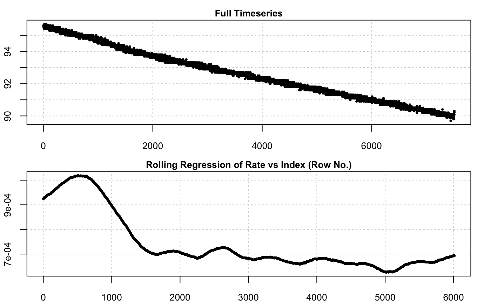
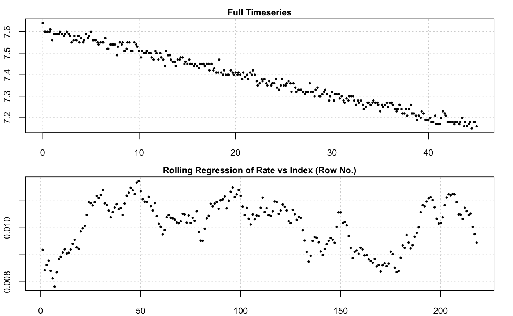

inspect() scans and subsets a data.frame object for errors that may affect
the use of various functions in respR. By default, the function scans only
the first 2 columns of a data frame and assumes that the first columne is
time data. A plot of the data is also produced, including a rolling
regression plot using a width of floor(0.2 * nrow([data frame]) for a quick
visual inspection of the rate pattern (or stability) of the data.
inspect(df, time = NULL, oxygen = NULL, plot = TRUE)
| df | data.frame object. Accepts any object of class |
|---|---|
| time | numeric vector. Defaults to NULL. This specifies the column number(s) of the time data to subset. |
| oxygen | numeric vector. Defaults to NULL. This specifies the column number(s) of the oxygen data to subset. |
| plot | logical. Defaults to TRUE. Plots the data for quick visual diagnosis. Works only when the subset dataframe contains exactly 2 columns. |
A list object of class inspect.
Time columns are checked for NA/NaN values, sequential time, duplicate time
and evenly-spaced time data. Oxygen columns are simply checked for NA/NaN
data. Once data checks are complete, the function produces a list object
which may be directly loaded into calc_rate(), calc_rate.bg(),
calc_rate.ft(), and auto_rate() for further analyses.
If you wish to scan more than two columns, you can do so by specifying the
time and oxygen arguments to select specific columns of a large data
frame. However, the function will not produce a plot. Thus, you may inspect
flowthrough respirometry data, which usually contains oxygen values for
inflow and outflow, by specifying a vector of column numbers, e.g. oxygen = c(2,3).
# automatically inspect first 2 columns: inspect(sardine.rd)#>#> Time Oxygen #> NA/NAN pass pass #> sequential pass - #> duplicated pass - #> evenly-spaced pass - #>inspect(urchins.rd)#> Warning: Time values are not evenly-spaced.#>#> time.min a b c d e f g h i j k #> NA/NAN pass pass pass pass pass pass pass pass pass pass pass pass #> sequential pass - - - - - - - - - - - #> duplicated pass - - - - - - - - - - - #> evenly-spaced WARN - - - - - - - - - - - #> l m n o p b1 b2 #> NA/NAN pass pass pass pass pass pass pass #> sequential - - - - - - - #> duplicated - - - - - - - #> evenly-spaced - - - - - - - #># inspect specific columns: inspect(urchins.rd, time = 1, oxygen = 4)#> Warning: Time values are not evenly-spaced.#> time.min c #> NA/NAN pass pass #> sequential pass - #> duplicated pass - #> evenly-spaced WARN - #> #> Uneven time data locations (first 20 shown) in column: time.min c #> [1] 1 2 3 4 5 6 7 8 9 10 11 12 13 14 15 16 17 18 19 20# inspect multiple columns x <- inspect(urchins.rd, time = 1, oxygen = c(2:12))#> Warning: Time values are not evenly-spaced.#>print(x)#> time.min a b c d e f g h i j k #> NA/NAN pass pass pass pass pass pass pass pass pass pass pass pass #> sequential pass - - - - - - - - - - - #> duplicated pass - - - - - - - - - - - #> evenly-spaced WARN - - - - - - - - - - - #>x$list$time.min # check position of errors in data frame#> $`NA/NAN` #> integer(0) #> #> $sequential #> integer(0) #> #> $duplicated #> integer(0) #> #> $`evenly-spaced` #> [1] 1 2 3 4 5 6 7 8 9 10 11 12 13 14 15 16 17 18 #> [19] 19 20 21 22 23 24 25 26 27 28 29 30 31 32 33 34 35 36 #> [37] 37 38 39 40 41 42 43 44 45 46 47 48 50 53 56 59 62 65 #> [55] 68 71 74 77 80 83 86 89 92 95 98 101 104 107 110 113 116 119 #> [73] 122 125 128 131 134 137 140 143 146 149 152 155 158 161 164 167 170 173 #> [91] 176 179 182 185 188 191 193 194 195 196 197 198 199 200 201 202 203 204 #> [109] 205 206 207 208 209 210 211 212 213 214 215 216 217 218 219 220 221 222 #> [127] 223 224 225 226 227 228 229 230 231 232 233 234 235 236 237 238 239 240 #> [145] 241 242 243 244 245 246 247 248 249 250 251 252 253 254 255 256 257 258 #> [163] 259 260 261 262 263 264 265 266 267 268 269 270 #># inspect flowthrough data x <- inspect(flowthrough.rd, 1, c(2,3))#>#>x#> time o2.out o2.in #> NA/NAN pass pass pass #> sequential pass - - #> duplicated pass - - #> evenly-spaced pass - - #>